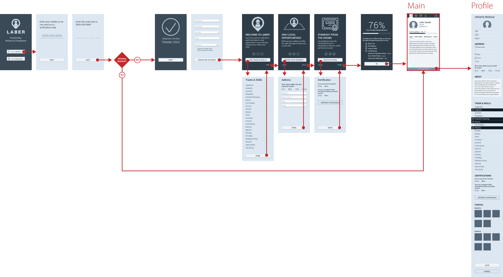
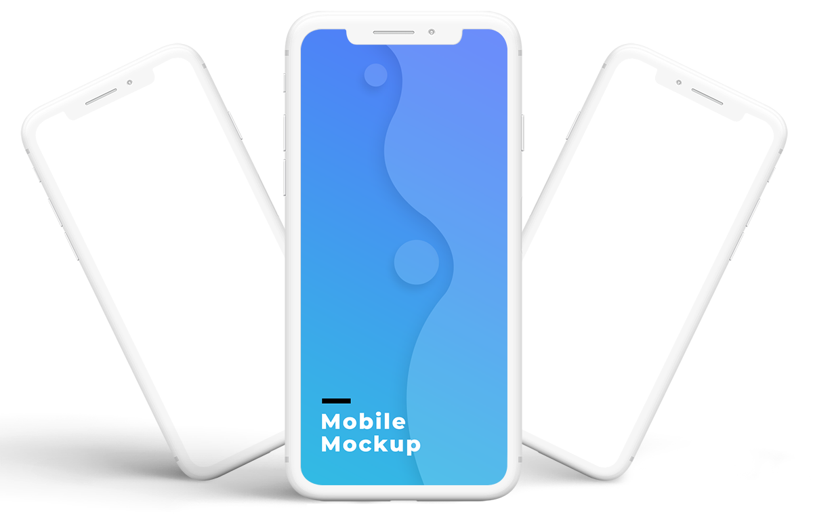

LABER, based in Brooklyn, NY, created a hiring application for the construction industry. Laber makes it a lot easier for construction companies to find and communicate with qualified candidates in one place. Laber's mobile app provides two separate experiences depending on if you are a construction worker looking for a job or a construction company looking to hire qualified workers. And if you sign in as a company looking to hire, you also have a web version of the app where you can easily manage your job post and communicate with qualified candidates.
Laber was in the start-up stage and already had a functioning app. That first version of the application helped to prove the concept and was being used by construction companies in the New York area. After seeing the app was positively improving how construction companies were hiring, they knew it was time to spread the world outside of the city of New York. However, before starting with their aggressive marketing campaign, they had to improve the current User Experience for the app. The main challenge here was to provide seamless experiences for the two separate user types, the construction workers and the hiring companies, across all versions of the app.
Workers:
Construction workers traditionally knew about new work opportunities through word of mouth. But Laber created an app that will provide construction workers a new tool they can create an account to showcase their skills and experience. The more information workers included on their profile will help hiring companies to find between qualified candidates for the job they were looking for. So the app had to be extremely easy and guide them through the account setup process.
Construction Companies:
The app gave construction companies a much more efficient way to hire workers than in traditional methods. They were able to achieve it because the founders had been in that position. So they knew exactly what features were needed and how the hiring process worked in the construction companies. So I had to provide a user experience that provided an intuitive flow that mirrored how they typically search, find, and contacted qualified workers. And that experience had to be on both web application and their mobile.
When I started working on this project was before the holiday season, a crucial season in the construction industry in New York. So I didn't have time to execute a proper user research interviews. A marketing campaign was already scheduled. I needed to make sure I finished my part fast so that the developers could finish it before the high holiday season. Otherwise, the company would have missed that great opportunity to spread the word about the new and better way to hire qualified construction workers.
Here is the process I followed.
I usually have to document a single user flow. But this time, I was treating two separates experiences, one for construction workers and the other one for construction companies. The process diagramming the current user flows helped to point out quickly specific areas we could improve the numbers of workers that register on the app. For example, to complete my registration as a construction worker, I needed to answer 19 questions and 30 different screens. That information was mainly to be used on the workers' profile, but users were being forced to follow that lengthy registration process to create their account.
To resolve that, I recommended a different registration path. This one only had 5 questions and a single page. After registering, I designed a series of onboarding screens to show the new users a series of key benefits for using the app. Each benefit was directly related to a group of questions on their profile. So we give them the option to enter relevant information AFTER they knew why it was for their benefits. Users could easily skip without interrupting the registration and onboarding flow
Click to View User Flow PDF Users typically decide if an app is right for them or not within minutes or sometimes even seconds. That is why the onboarding process needs to be skillfully designed to create a positive first impression. However, while documenting the user flows for the construction companies' web app version, I many times felt lost or even a bit confused. To change that negative first experience, I quickly did a wireframe prototype to show them my recommendation to make it a more positive experience, specifically for the first time users that are not used to this service to hire qualified construction workers.
Now that the wireframes were approved, I proceeded to design the UI for all three applications. I needed to make sure they all looked cohesive. So I started by defining the colors and iconography that will be used across all applications, either mobile or desktop versions. This video gives you a glimpse of my approach as I presented one of the first versions.
Because we were in a crunch time, I wanted to make sure developers had everything well defined and precise. Every user journey, micro-interactions, and variations clearly defined. That way, once they start working on the back-end code, they'll have minimal downtime due to questions or lack of information.
Quickly after updating the mobile and web apps, the marketing team started an aggressive campaign to attract new users. The number of registrations had a huge spike, and the engagement kept increasing. There were many lessons learned during the first 3 months after launching the redesigned version. But it was no doubt the redesigned user experience had a drastic impact on how both workers and hiring companies felt about Laber.
